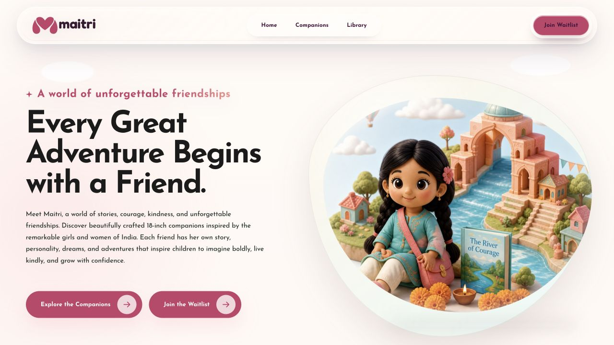
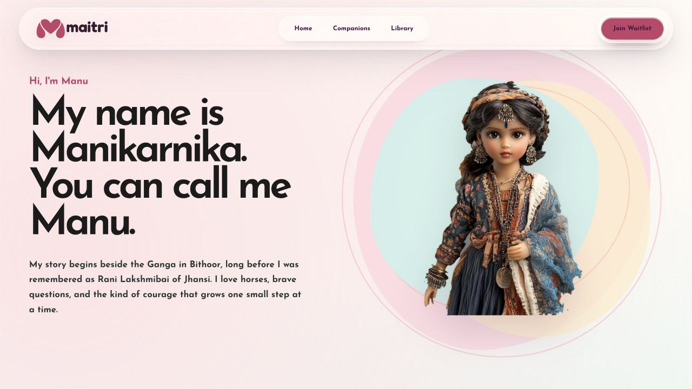
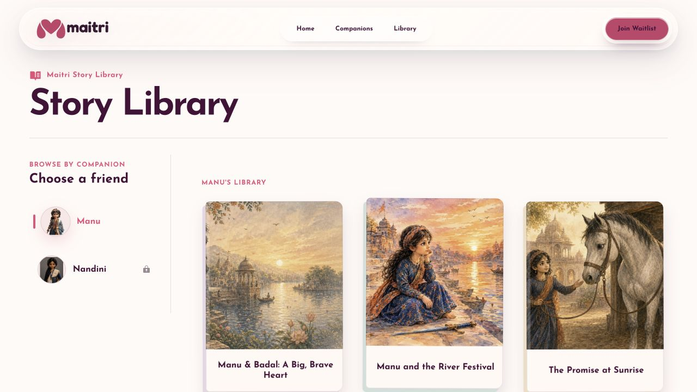

03 / Full case study
Maitri
a world to enter.
A story-led website for discovering companions, their stories, and the books that bring the world forward.

The problem
How do you help someone enter a new world, meet a companion, and find the next story?
The journey follows the audience’s likely curiosity: world → companion → story library → book preview. The library is organised around companions rather than an abstract catalogue.
Warm illustration, rounded navigation, confident typography, and restrained crimson accents create a product experience that feels like an invitation before it feels like a shop.
The sequence
Meet the character.
Stay for the story.

A companion detail page turns a broad brand world into a relationship.

The library makes discovery feel connected to the character, not detached from her.
What this demonstrates
Emotional pacing is
information architecture too.
My contribution covered the site’s UI/UX, interaction design, content journey, and frontend implementation. Launch-stage availability and brand claims remain framed as project context; the evidence here is the designed experience.